Task 6: Deploying Server Profiles
Now that we have a UCS Server Profile Template, and we have derived a server profile from it, we can assign it to a physical server.
On the left side of your screen, navigate to Configure -> Profiles and you will see the status Not Deployed next to your server:
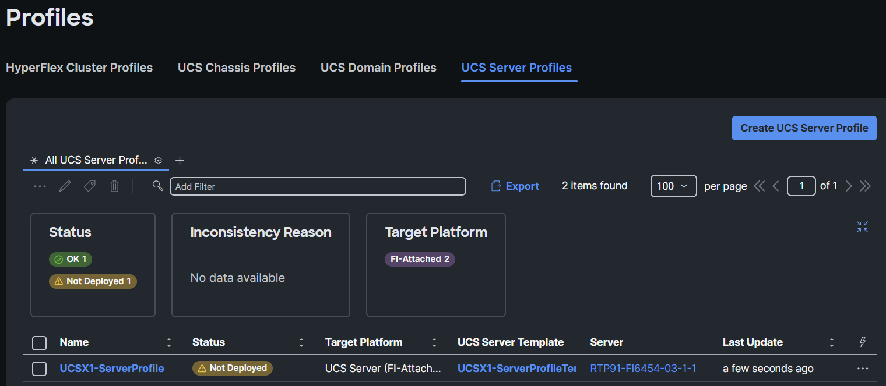
Figure 180
Click the three dots on the right and click on Deploy:

Figure 181
A warning message will appear. Select Reboot Immediately to Activate and then click Deploy:
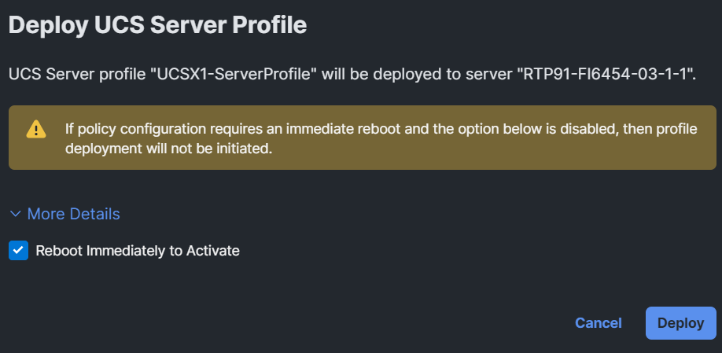
Figure 182
A green message will appear for a couple of seconds in the browser.

Figure 183
Click on the checkmark icon at the top of the browser to see the status:

Figure 184
If you click Deploy Server Profile, you see a bit more information:
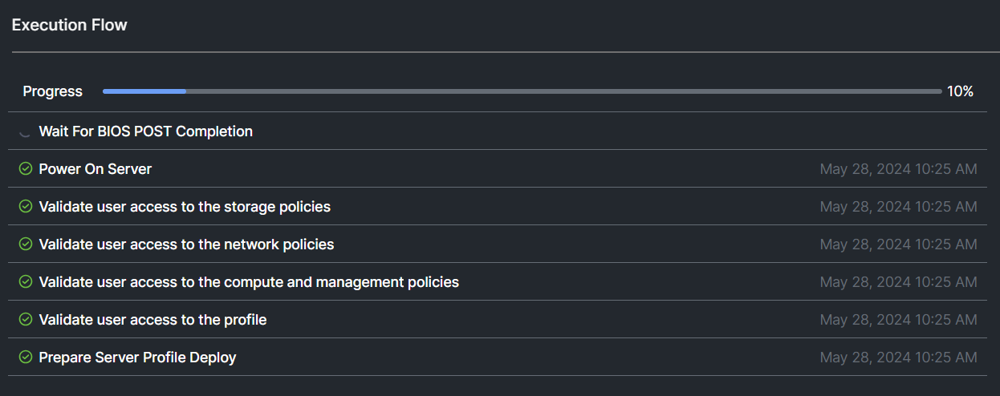
Figure 185
Go back to the server profiles and you see the validation state.

Figure 186
If you see a checkmark at the top and you only see “Validating”, just click templates and go back to Profiles:
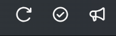
Figure 187
After a while you will see the status Activating:

Figure 188
Have a nice break and ask questions to the proctors. They are here for you. After about 15-20 minutes, the server profile is deployed and you will see OK.
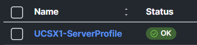
Figure 189
If you see a Failed status, click on it and investigate what the problem is.
The proctors can help you.

Figure 190
Task 5: Install Operation System
Start with this task only when your Server Profile is deployed on your server and has the status OK.
There are different ways to install an operating system on a server:
- KVM console
- Mount a local ISO and boot to it
- software repository
In the next steps, we will install the OS on the server via the “Install Operating System” option.
There are several ISOs in the software repository. This can be found under System / Software Repository:

Figure 191
Step 1: Install OS
Navigate to Operate -> Server, click the three dots found to the right side of the screen next to your server, and select Install Operating System:

Figure 192
Make sure only your server is selected and click Next:
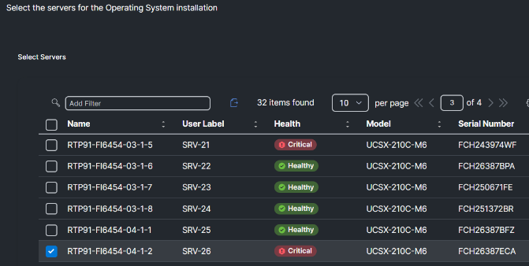
Figure 193
Select the RHEL OS image and click Next:

Figure 194
Do not change the “Select Configuration Source’
Change the IP configuration to DHCP, fill in the hostname with your Server ID, use UCSX@Cisco123 as the password, and click Next:

Figure 195
This method needs SCU to install the OS. For this lab, the SCU image is already uploaded. Select the SCU and click Next.
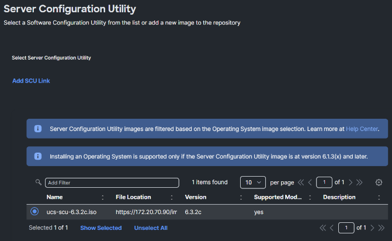
Figure 196
Depening on the server configuration, there are multiple ways to install the OS on a disk. For this lab, configure the installation target to use the M.2 drives and click Next:

Figure 197
The view you have right now is the summary. Click on View Details for a bit more information.
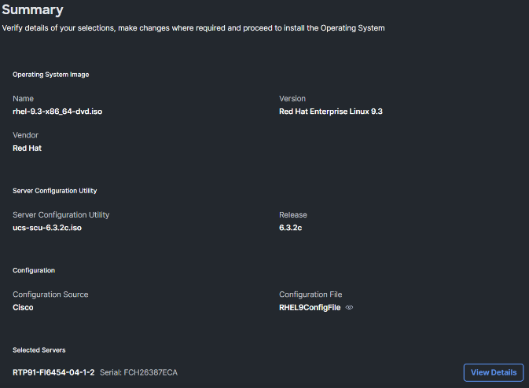
Figure 198
Click Install, then click Install again on the warning message:

Figure 199
The installation will start.
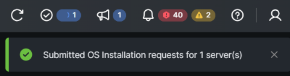
Figure 200
To view the progress, you can click the checkmark at the bar or og the the server KVM Console.
Go to the Server view and select the three dots to the right of your server. Select Launch Tunneled vKVM. This features doesn’t require a VPN connection to the network where the server is located.

Figure 201
Another web browser tab is opened. It is possible you won’t see anything for a couple of minutes. The total installation can take between 45 and 60 minutes. Feel free to proceed with the rest of the lab and come back later for further review.
Below is an example of what you should see in the KVM window once the OS is installed. Note the servername and IP address (should be in the range of 172.20.70.x/24)
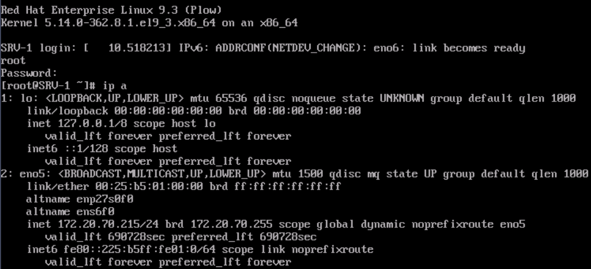
Figure 202
Step 2: Server Inventory after OS Installation
Now that the server has a profile and the OS is installed, let’s go back to the server and have a closer look at what more information you will see right now.
Click on Servers and select your server. This will direct you to the general properties of the server:
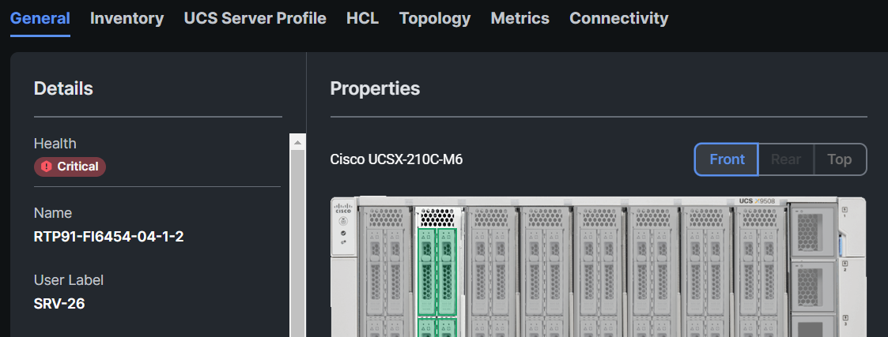
Figure 203
Click on HCL. The server software compliance should show incomplete. The OS was installed, but the drivers weren’t installed. Click Get Recommended Drivers:

Figure 204
Select OS Vendor: Red Hat and the OS Version is 9.3. Intersight will show the recommended driver versions and will provide a link for downloading the driver ISO. We will not download the ISO for this lab. Click Close:
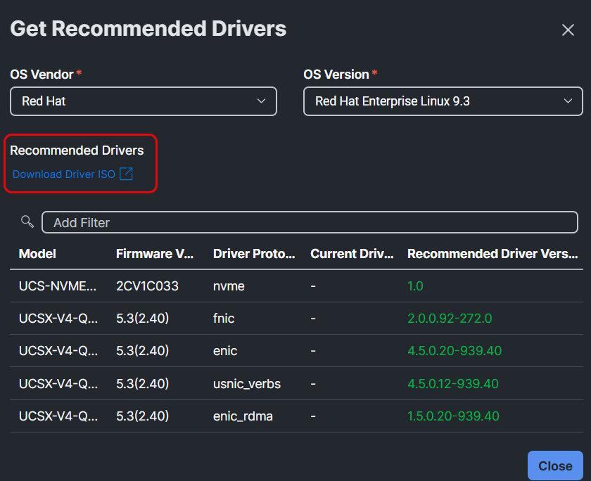
Figure 205
Click the Topology tab. Prior to deploying a server profile, an image of the FIs and IFMs were displayed but now that a Server Profile and OS have been deployed to the server, you see the vNICs connection to the IFM:

Figure 206
Now click the Connectivity tab. This should display vETH0 and vETH1 are up and running but vHBA-A and vHBA-B are down:

Figure 207